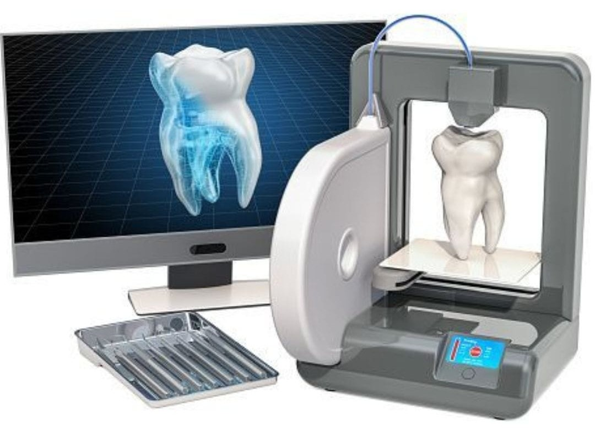
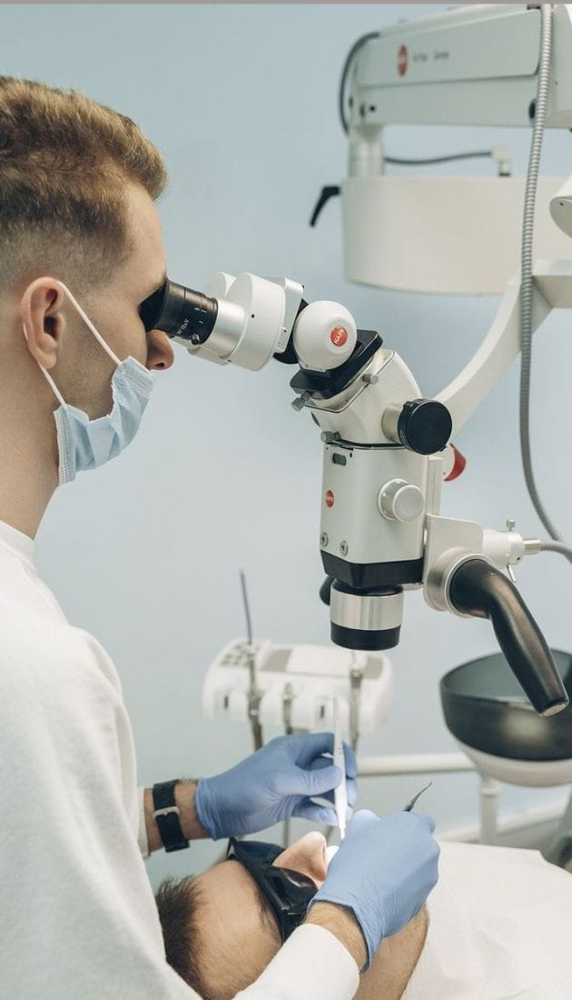
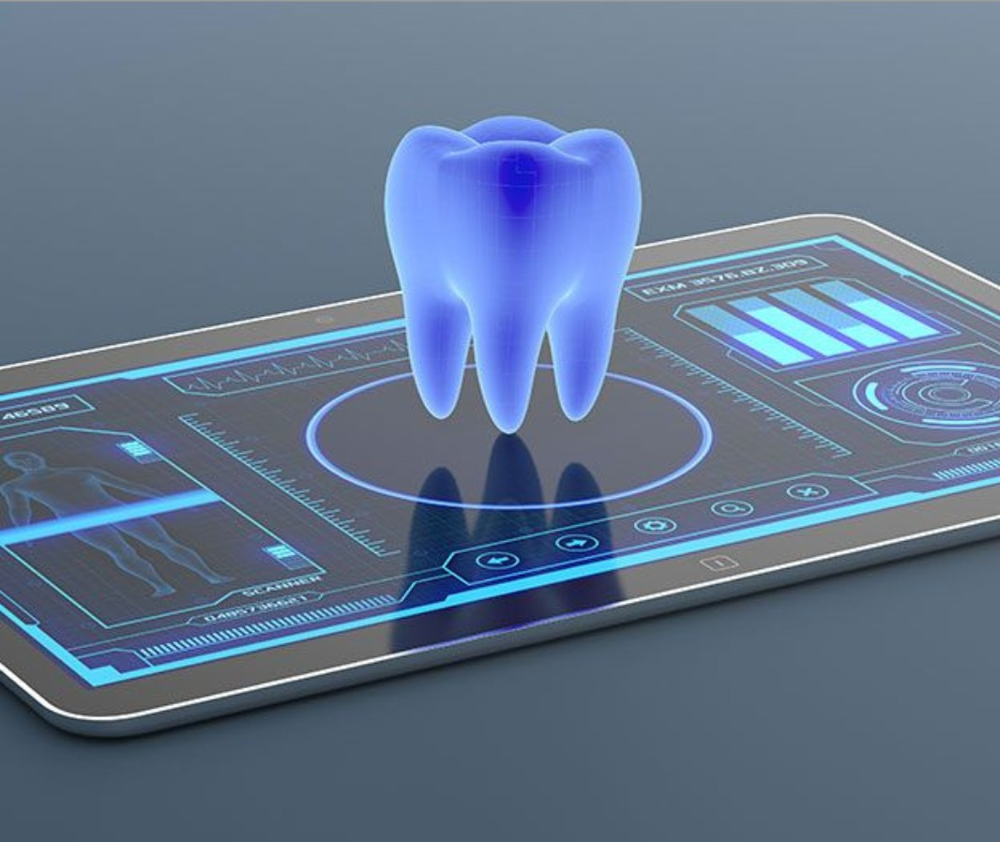
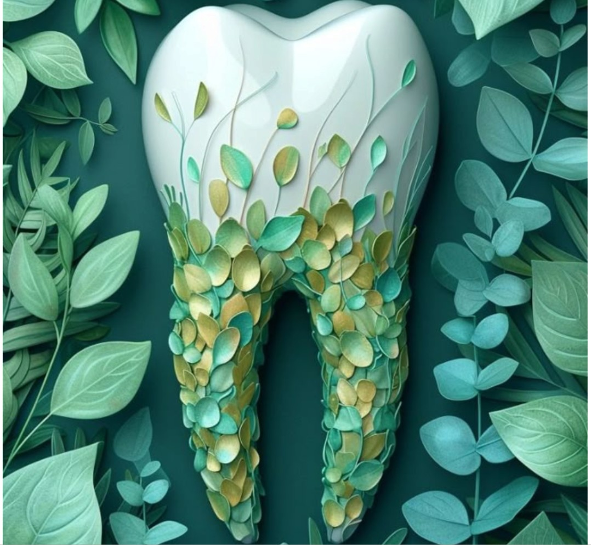
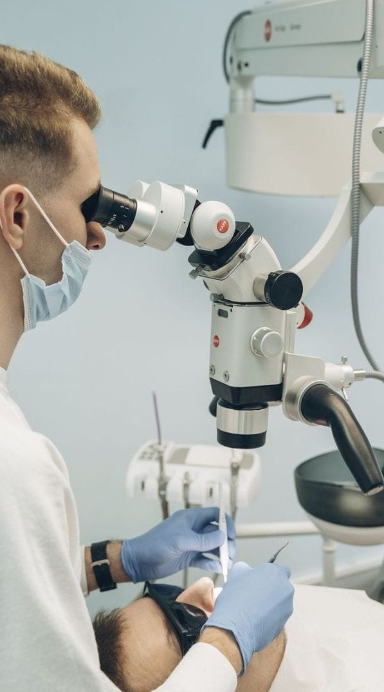
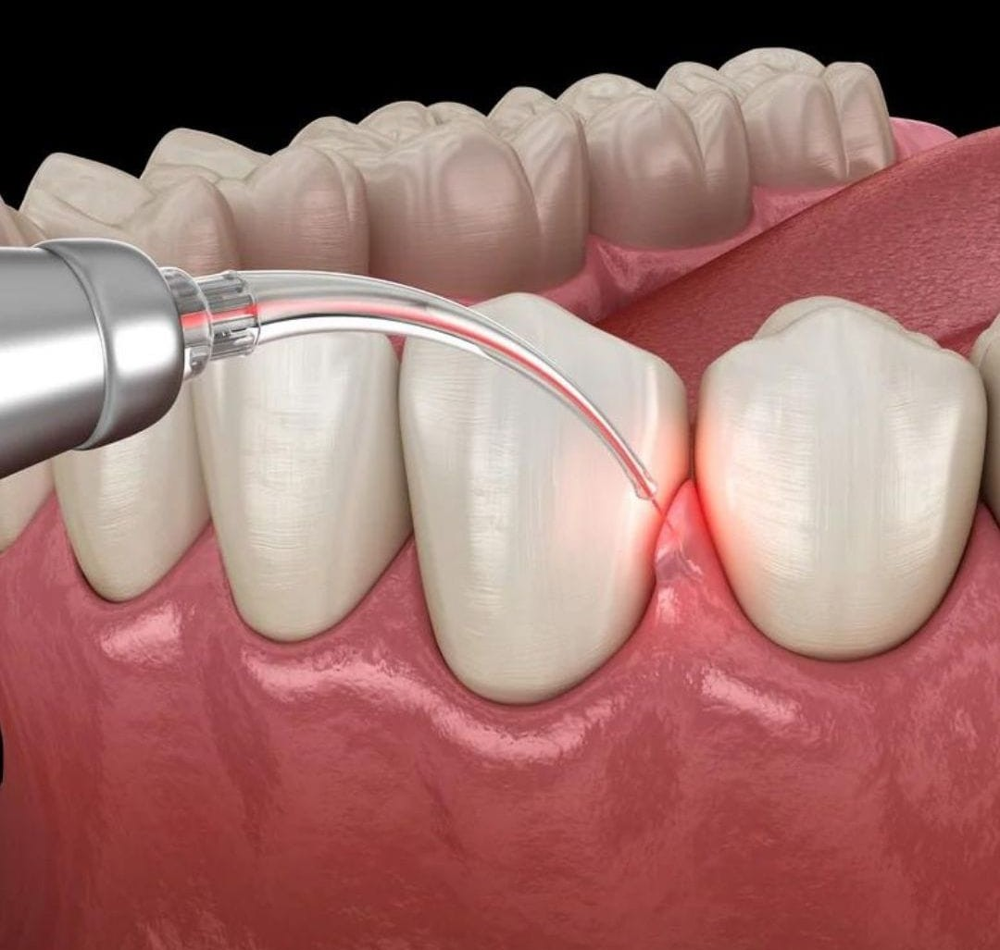
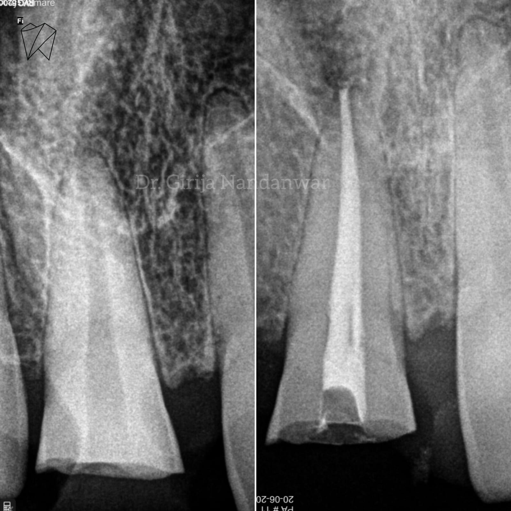
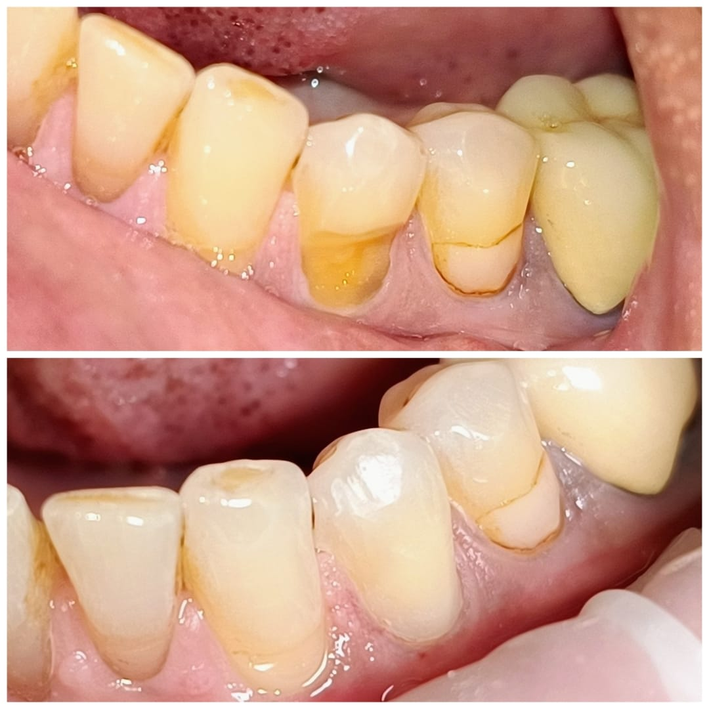
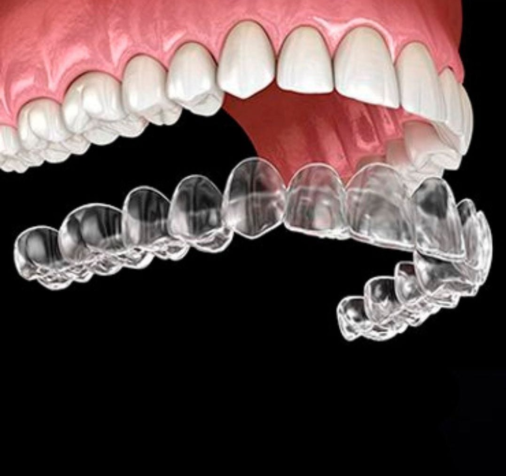
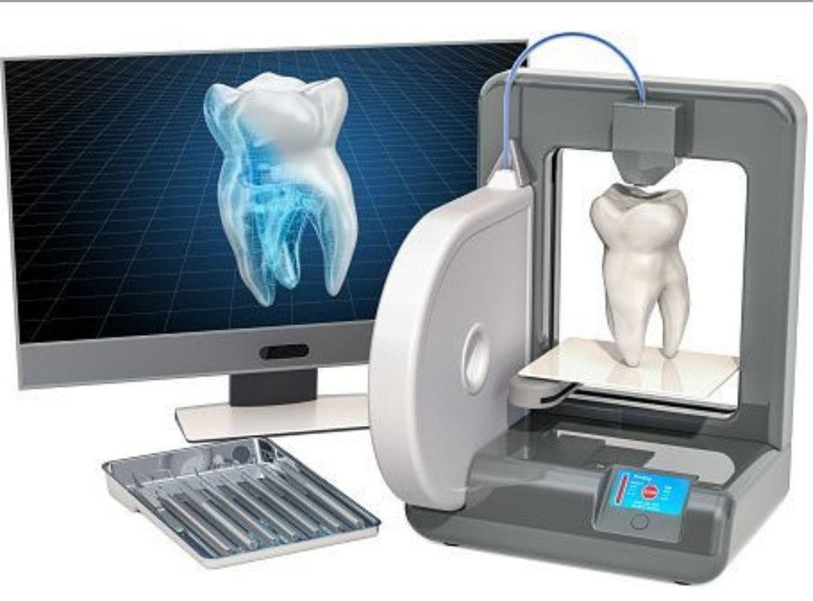

Expert Dental Articles from the Best Dentist in Baner, Pune
Welcome to the Enamel Craft Dental Studio blog, your trusted source for comprehensive dental care information. Located on Pancard Club Road, Baner, Pune, we are committed to providing expert insights on various dental treatments, oral health tips, and the latest advancements in dentistry.
Our blog covers essential topics including painless root canal treatment, dental implants, cosmetic dentistry, smile makeovers, teeth whitening, and preventive dental care. Whether you're looking for information about root canal treatment in Baner, dental implants in Pune, or cosmetic dentistry procedures, our articles are written by experienced dental professionals to help you make informed decisions about your oral health.
Explore our articles below to learn more about maintaining optimal dental health and discover why Enamel Craft Dental Studio is recognized as the best dentist in Baner for comprehensive dental care.
Latest Dental Blog Articles

3D Printing3D Printing in Dental Crowns
Modern dentistry is evolving rapidly, and one of the biggest advancements is 3D printing in dental crowns. At Enamel Craft Dental Studio, Baner, we are proud to offer this cutting-edge technology to our patients.
Read More
TechnologyMicroscopic Dentistry - Precision with Magnification
Microscopic dentistry uses advanced magnification technology to provide precise, accurate treatments. Learn how this technology improves root canal therapy and other dental procedures.
Read More
AI TechnologyAI in Dentistry - Early Cavity Detection
Artificial intelligence is revolutionizing dental care by enabling early detection of cavities and other oral health issues. Discover how AI helps in preventive dentistry.
Read More
Eco-FriendlyGreen Dentistry - Eco-Friendly Dental Care
Learn about eco-friendly dental practices that reduce environmental impact while maintaining high-quality patient care. Green dentistry is the future of sustainable healthcare.
Read More
Full Mouth Rehabilitation - Complete Dental Restoration
Full mouth rehabilitation is a comprehensive approach to restoring all teeth in both upper and lower jaws. Learn about this transformative treatment option.
Read More
Minimally InvasiveMicrodentistry - Minimally Invasive Dental Procedures
Microdentistry focuses on preserving natural tooth structure through minimally invasive techniques. Discover how this approach benefits patients.
Read More
TechnologyLaser Dentistry - Advanced Dental Treatment
Laser technology in dentistry offers precise, painless treatments with faster healing times. Explore the benefits of laser dentistry.
Read More
OPG Orthopantomogram - Comprehensive Dental X-Ray
OPG X-rays provide a complete view of your teeth, jaws, and surrounding structures. Understand why this diagnostic tool is essential.
Read More
Root CanalPainless Root Canal Treatment - Advanced Technology
Modern root canal treatment is painless and comfortable thanks to advanced technology and techniques. Discover how we make root canals stress-free.
Read More
RestorationComposite Restoration - Natural-Looking Fillings
Composite fillings provide a natural-looking solution for cavities. Learn about the benefits of tooth-colored composite restorations.
Read More
OrthodonticsTeeth Aligners - Modern Braces for Adults
Clear aligners offer a discreet alternative to traditional braces. Discover how modern aligner technology can straighten your teeth comfortably.
Read More
White spots on Teeth - Enamel Hypoplasia explained
Learn about enamel hypoplasia, a condition that causes white spots on teeth. Understand the causes, symptoms, and treatment options available.
Read More
Case StudyCase Discussion: Dental
Explore real dental case studies and treatment outcomes from Enamel Craft Dental Studio. Learn about successful dental procedures and patient experiences.
Read MoreWhy Choose Enamel Craft Dental Studio in Baner, Pune?
Enamel Craft Dental Studio, located on Pancard Club Road, Baner, Pune, is recognized as one of the best dental clinics in Baner for comprehensive dental care. Led by Dr. Girija Nandanwar Dhakite, our clinic specializes in:
- Painless Root Canal Treatment - Advanced microscope-assisted root canal therapy for comfortable, precise treatment
- Dental Implants - High-quality, affordable dental implants with guided placement technology
- Cosmetic Dentistry - Professional smile designing, veneers, teeth whitening, and aesthetic restorations
- Orthodontic Treatment - Clear aligners, metal braces, and ceramic braces for teeth straightening
- Emergency Dental Care - Immediate treatment for tooth pain, swelling, and urgent dental issues
- Family Dentistry - Complete dental care for kids, adults, and seniors
Our state-of-the-art facility uses advanced technology including dental microscopes, digital scanning, 3D printing, and laser dentistry to ensure the highest quality of care. We are committed to providing affordable dental treatments without compromising on quality.
Related Services:
Book Your Appointment Today
Experience the best dental care in Baner, Pune. Schedule your consultation with our expert team for painless root canal treatment, dental implants, cosmetic dentistry, or any other dental procedure.
Book Appointment on WhatsApp Call: +91-7666297468